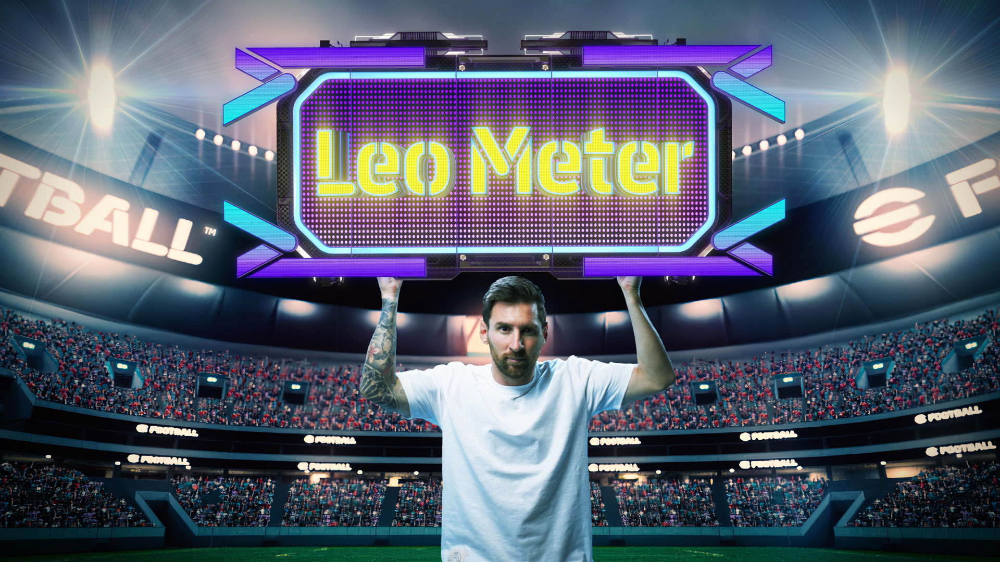
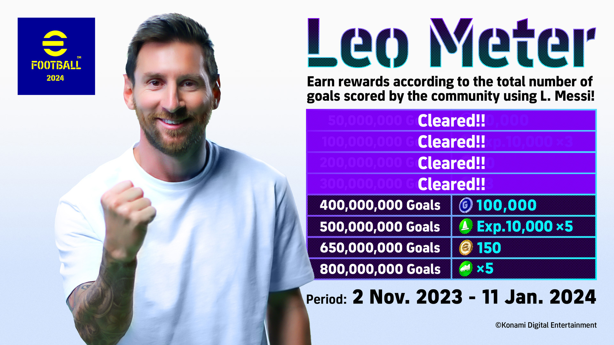

Событие
Посол eFootball™ 2024 Лео Месси в очередной раз завоевал самую престижную индивидуальную награду в мировом футболе. В
ознаменование этого непревзойденного достижения мы проводим акцию «Лев Метр»!
Играйте в матчи и получайте награды в зависимости от общего количества голов, забитых сообществом с помощью Л. Месси
период кампании!
Если цель достигнет 800 миллионов, каждый получит в награду до 200 монет eFootball™ и опыта. 10 000 программ обучения x8,
программа обучения навыкам x8 и 150 000 GP!
Объединив усилия, чтобы отпраздновать беспрецедентный подвиг Лео Месси, подключайтесь к сети и забивайте несколько голов,
чтобы внести свой вклад в общий результат во всем мире!
Получите в свои руки специально разработанного Л. Месси!
Лев Метр
(по состоянию на 29.11.2023)

Период кампании
11.02.2023 02:00 - 01.11.2024 01:59 (UTC)
Награды
Награды будут распределяться последовательно, в зависимости от количества забитых голов.

| Подсчет голов | Награды |
|---|---|
| 50 миллионов голов | 50 000 золотых монет |
| 100 миллионов голов | Эксп. 10 000 Программа обучения х3 |
| 200 миллионов голов | 50 монет eFootball™ |
| 300 миллионов голов | Программа обучение навыкам х3 |
| 400 миллионов голов | 100 000 ЗМ |
| 500 миллионов голов | Эксп. 10 000 Программа обучения х5 |
| 650 миллионов голов | 50 монет eFootball™ |
| 800 миллионов голов | Программа обучение навыкам х5 |